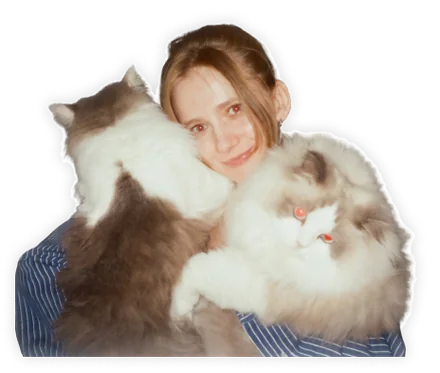
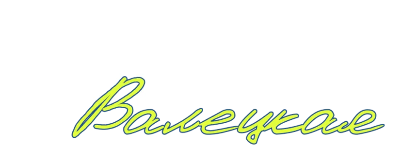
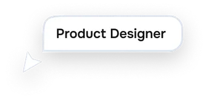
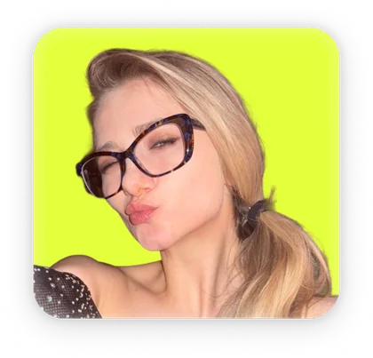
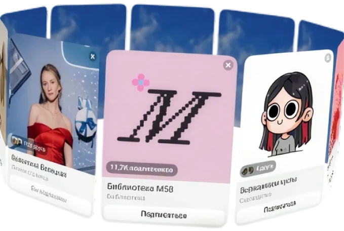

это я, ВаляВалентина Валецкая — продуктовый дизайнер



Разбираюсь в сложных задачах → нахожу простые решения
NEW статистика на web и с нуля на mobile

- Июн — Дек 2024
- WEB
- Mobile
+16% оформленных сообществ авторами

- Мар — Июл 2025
- WEB
- Mobile
4 A/B‑теста: почему iOS и Android реагировали по‑разному

- 2025 — 2026
- iOS
- Android
Обо мне

Команда опыта автора в сообществах: статистика, создание сообщества, онбординг
- Вела задачи от гипотезы до A/B‑теста
- Собрала библиотеку компонентов, её переиспользуют другие команды
- Интервью, юзабилити-тесты, ~400 респондентов
Мои решения потом берут другие команды
Визуализация данных · Большая практика · Типографика и вёрстка · Немодерируемые исследования
Uprock School · 2024
Contented · 2022–2023
НИ ТПУ · 2017–2022
Леплю из глины, танцую контемп и снимаю на плёнку
Ты долистал до конца